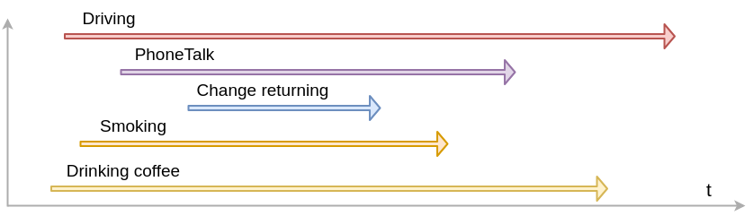
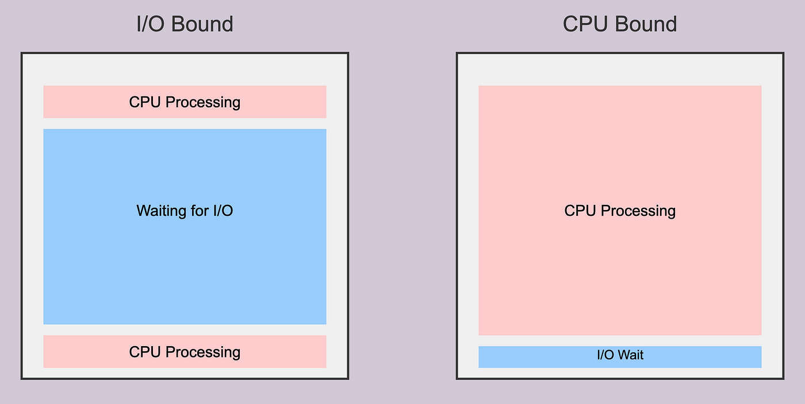
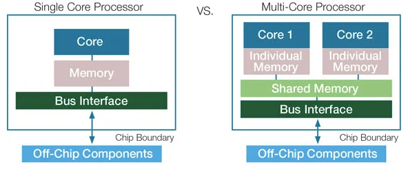
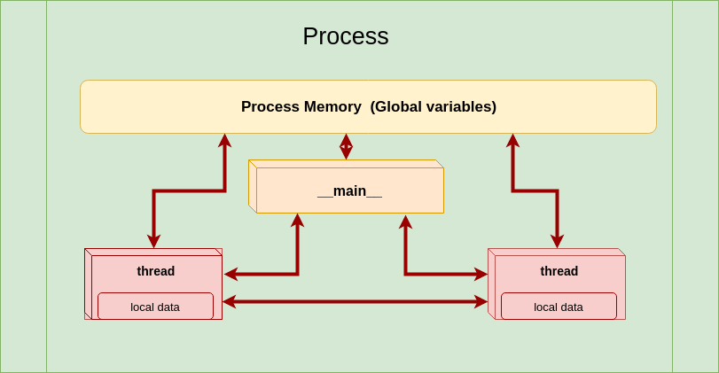
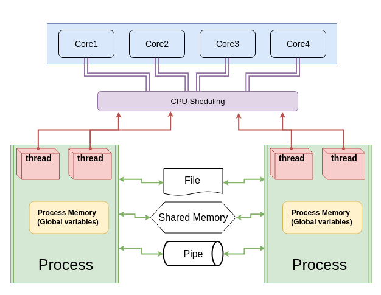
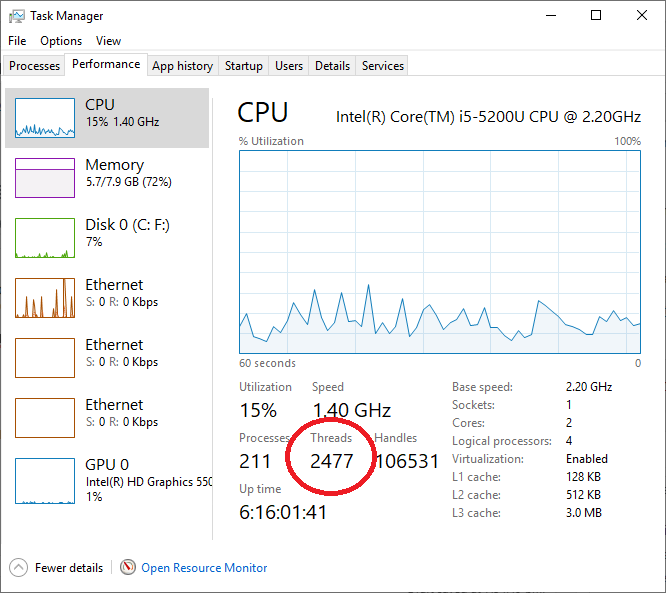
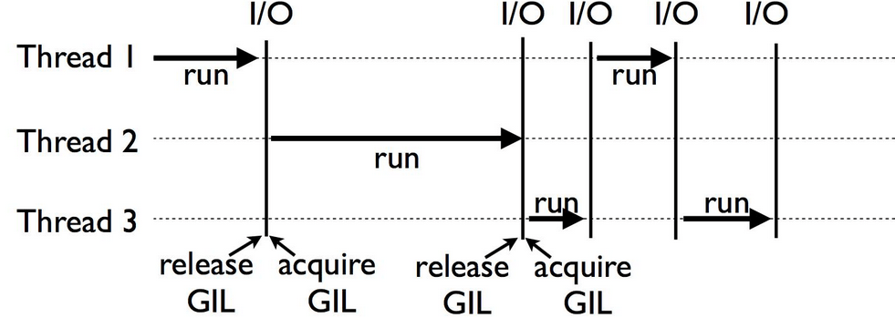

Keyboard shortcuts:
N/СпейсNext Slide
PPrevious Slide
OSlides Overview
ctrl+left clickZoom Element
If you want print version => add '
?print-pdf' at the end of slides URL (remove '#' fragment) and then print.
Like: https://progressbg-python-course.github.io/...CourseIntro.html?print-pdf
Created for
Iva E. Popova, 2016-2025,

Introduction
Introduction
Multitasking
- Multitasking is the ability of an operating system or application to execute multiple tasks (processes) simultaneously.
- It is achieved by utilizing the operating system's ability to manage multiple tasks, either by time-sharing a single CPU or by distributing tasks across multiple CPUs or cores.
{kind=link}
{kind=link}

Why?
- The goal is to make our programs faster and more responsive by doing multiple things seemingly (Concurrent) or actually (Parallel) at the same time.
- Concurrent execution gives the appearance of multiple tasks happening simultaneously, even when they might be taking turns on a single processor. It's about managing multiple tasks that start, run, and complete in overlapping time periods, but not necessarily executing at the exact same moment.
- Parallel execution involves truly running multiple tasks simultaneously, typically by utilizing multiple CPU cores or processors. This is genuine simultaneous execution.
Basic Concepts: CPU-Bound and I/O-Bound Tasks
Basic Concepts: CPU-Bound and I/O-Bound Tasks
Overview
- Every task performed by modern computers can be classified as CPU-Bound or I/O-Bound.
- Understanding the type of task will help us determine which of the parallel programming libraries in Python to use (threading, multiprocessing, asyncio).
{kind=link}

CPU-Bound Tasks
- We say that a task is CPU-bound when its execution time depends solely on the CPU's speed.
- For such tasks performance is limited by the speed of the CPU.
- Examples of CPU-Bound Tasks:
- Mathematical calculations (e.g., matrix multiplication, numerical integration)
- Image and video processing (e.g., applying filters, encoding/decoding)
- Simulations (e.g., physics simulations)
- Data analysis and machine learning algorithms
- Cryptographic operations (e.g., hashing, encryption/decryption)
I/O-Bound Tasks
- I/O-bound tasks are operations where the completion time is primarily determined by the time spent waiting for input/output operations to complete, rather than by CPU processing time.
- For such tasks execution speed is limited by how quickly data can be transferred
- Examples of I/O-Bound Tasks:
- Reading or writing files to disk
- Network operations (e.g., API calls, downloading files, web scraping)
- Database queries
- User input
Basic Concepts: Single-core vs Multi-core Processor
Basic Concepts: Single-core vs Multi-core Processor
Single-core vs Multi-core Processor
{kind=link}

Check CPU details
- On MacOS/Linux Terminal:
- On Windows Find out how many cores your processor has @support.microsoft.com
- By Python Script:
- You must install psutil
lscpu | head -10
import psutil
# Get the number of physical cores
physical_cores = psutil.cpu_count(logical=False)
print(f"Number of physical cores: {physical_cores}")
# Get the number of logical processors (hardware threads)
logical_processors = psutil.cpu_count(logical=True)
print(f"Number of logical processors (hardware threads): {logical_processors}")
Basic Concepts: Processed and Threads
Basic Concepts: Processed and Threads
Processes
- Processes are independent execution units that contain their own state information, use separate memory spaces, and communicate with each other through inter-process communication (IPC) mechanisms like pipes, sockets, or shared memory.
- Characteristics
- Isolation: Processes are isolated from each other. Memory in one process is not accessible to another.
- Robustness: A crash in one process does not affect other processes.
- Context Switching: More resource-intensive due to separate memory spaces.
- Concurrency and Parallelism: Ideal for CPU-bound tasks as each process can run on a separate core or CPU.
Example in Python
- Next example demonstrates the use of multiprocessing for CPU-bound operations like computationally intensive calculation.
import multiprocessing
import time
import math
def perform_heavy_calculation(n):
"""Perform a computationally intensive calculation."""
print(f"Processing {n} in process {multiprocessing.current_process().name}")
# A simple but computationally intensive task
result = 0
for i in range(10000000): # 10 million iterations
result += n * (math.sin(i * 0.00001) * math.cos(i * 0.00002))
return f"Input: {n}, Result: {result:.6f}"
def process_without_multiprocessing(numbers):
"""Process a list of numbers sequentially."""
start_time = time.time()
results = []
for number in numbers:
results.append(perform_heavy_calculation(number))
end_time = time.time()
return results, end_time - start_time
def process_with_multiprocessing(numbers, num_processes=None):
"""Process a list of numbers with multiprocessing."""
if num_processes is None:
num_processes = multiprocessing.cpu_count() # Use all available CPU cores
start_time = time.time()
with multiprocessing.Pool(processes=num_processes) as pool:
results = pool.map(perform_heavy_calculation, numbers)
end_time = time.time()
return results, end_time - start_time
if __name__ == "__main__":
# Just a list of numbers for our tasks
test_numbers = list(range(1, 9))
print(f"Running tests on {len(test_numbers)} tasks...")
print("CPU Count:", multiprocessing.cpu_count())
print("\nRunning without multiprocessing...")
single_results, single_time = process_without_multiprocessing(test_numbers)
print("\nRunning with multiprocessing...")
multi_results, multi_time = process_with_multiprocessing(test_numbers)
# Compare the results
print("\nResults:")
print(f"Without multiprocessing: {single_time:.2f} seconds")
print(f"With multiprocessing: {multi_time:.2f} seconds")
print(f"Speedup: {single_time / multi_time:.2f}x")
# Print first result from each method to verify they're the same
print("\nSample results (first result):")
print(f"Sequential: {single_results[0]}")
print(f"Multiprocessing: {multi_results[0]}")
Threads
- Threads are lighter units of execution that share the same memory space within a single process. They can run concurrently but are limited by the Global Interpreter Lock (GIL) in CPython, which can prevent multiple threads from executing Python bytecodes simultaneously.
- A Thread lives in a Process. One Process can run multiple Threads.
- Characteristics:
- Shared Memory: Threads share the same memory space, making communication between threads easier and faster.
- Lightweight: Less resource-intensive than processes since they share memory.
- GIL Limitation: In CPython, the GIL ensures only one thread executes Python bytecode at a time, limiting true parallelism for CPU-bound tasks.
- Concurrency: Best suited for I/O-bound tasks where the program spends time waiting for external events.
Example in Python
- Next example demonstrates the use of threading for I/O-bound operations like image download.
- Note, that you must have requests module installed
pip install requests
import threading
import os
import time
import requests
def download_image(url, index, folder):
"""Download an image and save it to the specified folder."""
headers = {
"User-Agent": "Mozilla/5.0 (Windows NT 10.0; Win64; x64) AppleWebKit/537.36 (KHTML, like Gecko) Chrome/110.0.0.0 Safari/537.36"
}
response = requests.get(url, headers=headers, stream=True)
if response.status_code != 200:
print(f"Failed to download {url} - HTTP {response.status_code}")
return
file_path = os.path.join(folder, f"image_{index}.jpg")
# Write image to file in chunks
with open(file_path, "wb") as file:
for chunk in response.iter_content(1024):
file.write(chunk)
print(f"Downloaded: {file_path} ({file_size} bytes)")
def download_without_threading(urls, folder):
"""Sequential download without threading."""
start_time = time.time()
for i, url in enumerate(urls):
download_image(url, i, folder)
return time.time() - start_time
def download_with_threading(urls, folder):
"""Download using threading."""
start_time = time.time()
threads = []
for i, url in enumerate(urls):
thread = threading.Thread(target=download_image, args=(url, i, folder))
threads.append(thread)
thread.start()
for thread in threads:
thread.join()
return time.time() - start_time
if __name__ == "__main__":
# List of image URLs to download
urls = [
"https://unsplash.com/photos/CTflmHHVrBM/download?force=true",
"https://unsplash.com/photos/pWV8HjvHzk8/download?force=true",
"https://unsplash.com/photos/1jn_3WBp60I/download?force=true",
"https://unsplash.com/photos/8E5HawfqCMM/download?force=true",
"https://unsplash.com/photos/yTOkMc2q01o/download?force=true",
]
# Directories to save images
sequential_path = os.path.join(os.getcwd(), "downloaded_images_sequential")
threading_path = os.path.join(os.getcwd(), "downloaded_images_threading")
os.makedirs(sequential_path, exist_ok=True)
os.makedirs(threading_path, exist_ok=True)
print(f"Running tests on {len(urls)} images...")
print("\nRunning without threading...")
single_time = download_without_threading(urls, sequential_path)
print("\nRunning with threading...")
multi_time = download_with_threading(urls, threading_path)
# Compare the results
print("\nResults:")
print(f"Without threading: {single_time:.2f} seconds")
print(f"With threading: {multi_time:.2f} seconds")
print(f"Speedup: {single_time / multi_time:.2f}x")
Threads vs Processes
{kind=link}

Threads vs Processes
{kind=link}

Threads vs Processes
- Memory:
- Processes: Separate memory space, more secure but with higher overhead.
- Threads: Shared memory space, less overhead but risk of data corruption due to concurrent access.
- Performance:
- Processes: Better for CPU-bound tasks due to true parallelism on multiple cores.
- Threads: Better for I/O-bound tasks; limited by GIL for CPU-bound tasks.
- Communication:
- Processes: Requires IPC mechanisms (pipes, queues, shared memory).
- Threads: Easier and faster through shared variables and data structures.
- Failure Isolation:
- Processes: A crash in one process does not affect others.
- Threads: A crash in one thread can affect the entire process.
Check running process and threads - Windows
- You can view the number of current running process and threads by Task Manager:
- Or, you may use Process Explorer to see all the threads under a process.
{kind=link}

Check running process and threads - Linux/MacOS
# view all processes:
top
# view all threads per process:
top -H -p <pid>
Thread-based parallelism
Thread-based parallelism
Multithreading in Python
- threading module is the preferred way in Python for thread-based "parallelism" (a note about GIL!)
- A thread is created by the
Threadclass constructor. - Once created, the thread could be started my
start()method - Other threads can call a thread’s
join()method. This blocks the calling thread until the thread whose join() method is called is terminated
Creating Thread objects
tr_obj = threading.Thread(target=None, name=None, args=(), kwargs={}, daemon=None)
target- function to be run in a threadnameis the thread name. By default, a unique name is constructed of the form "Thread-N" where N is a small decimal numberargsis the argument tuple for the target invocationkwargsis a dictionary of keyword arguments for the target invocationdaemon- if not None, a daemonic thread will be created.- A non-daemon thread blocks the main program to exit if they are not dead. Daemonic thread do not prevent the main program to exit, and will be killed by the main process when exiting.
Creating and running thread - example
import threading
import time
def worker(x):
tid = threading.currentThread().name;
print(f"Work started in thread {tid}")
time.sleep(5)
print(f"Work ended in thread {tid}")
# create the tread
tr = threading.Thread(target=worker, args=(42,))
# start the thread:
tr.start()
# wait until thread terminates:
tr.join()
print("Worker did its job!")
Sequential vs multi-threaded processing
import threading
import time
def worker(x):
tid = threading.currentThread().name
# do some hard and time consuming work:
time.sleep(2)
print(f"Worker {tid} is working with {x}")
#################################################
# Sequential Processing:
#################################################
t = time.time()
worker(42)
worker(84)
print("Sequential Processing took:",time.time() - t,"\n")
#################################################
# Multithreaded Processing:
#################################################
tmulti = time.time()
tr1 = threading.Thread(target=worker, args=(42,))
tr2 = threading.Thread(target=worker, args=(82,))
tr1.start();tr2.start()
tr1.join(); tr2.join()
print("Multithreaded Processing took:",time.time() - tmulti)
You can enjoy the speed of multithreading in Python, if the threaded workers are not CPU intensive.
GIL - the Global Interpreter Lock
- GIL is a mechanism which prevents simultaneous working of multiple thread. So, Python's GIL prevents the "real" parallel multitasking mechanism, and instead implements a cooperative and preemptive multitasking.
- GIL @wiki.python.org
{kind=link}

Process-based parallelism
Process-based parallelism
Multiprocessing in Python
- multiprocessing module is the built in module to create process-based parallelism in Python.
- A process is created by the
Processclass constructor. - Once created, the process could be started by
start()method - Other processes can call a process’s
join()method. This blocks the calling process until the process whose join() method is called is terminated - The multiprocessing package mostly replicates the API of the threading module
pr_obj = multiprocessing.Process(target=None, name=None, args=(), kwargs={}, daemon=None)
Programming guidelines for using multiprocessing
- There are certain guidelines and idioms which should be adhered to when using multiprocessing: Programming guidelines @python3 docs.
- But most important is to make sure that the main module can be safely imported by a new Python interpreter without causing unintended side effects (such as starting a new process)
- I.e. always use
if __name__ == '__main__':when using processes!
Creating and running process - example
import multiprocessing as mp
import time
def worker(x):
pid = mp.current_process().name;
print("x = {} in {}".format(x, pid))
time.sleep(2)
if __name__ == '__main__':
# create the process
p = mp.Process(target=worker, args=(42,))
# start the process:
p.start()
# wait until process completes:
p.join()
print("Worker did its job as separate Process!")
No GIL effect on processes
- You can use the full power of multiprocessing if your system have multiple cores.
import multiprocessing as mp
import time
def worker(r):
pid = mp.current_process().name
# do some hard and time consuming work:
global result
res = 0
for i in r:
res += i
if "Process-" in pid:
output.put(result)
else:
result += res
print("Worker {} is working with {}".format(pid, r))
if __name__ == '__main__':
#################################################
# Sequential Processing:
#################################################
t = time.time()
result = 0
worker(range(50_000_000))
worker(range(50_000_000,100_000_000))
print("Sequential Processing result: ", result)
print("Sequential Processing took:",time.time() - t,"\n")
#################################################
# Multithreaded Processing:
#################################################
t = time.time()
# Define an output queue
output = mp.Queue()
p1 = mp.Process(target=worker, args=(range(50_000_000),))
p2 = mp.Process(target=worker, args=(range(50_000_000,100_000_000),))
p1.start();p2.start()
p1.join(); p2.join()
print("Multiprocess Processing result: ", output.get())
print("Multiprocess Processing took:",time.time() - t,"\n")
# Worker MainProcess is working with range(0, 50000000)
# Worker MainProcess is working with range(50000000, 100000000)
# Sequential Processing result: 4999999950000000
# Sequential Processing took: 7.217836141586304
# Worker Process-2 is working with range(50000000, 100000000)
# Worker Process-1 is working with range(0, 50000000)
# Multiprocess Processing result: 4999999950000000
# Multiprocess Processing took: 4.363953113555908
Sharing state between processes (Inter-process communication)
- Processes in an operating system typically run independently and have their own memory space.
- Inter-process communication (IPC) refers to the mechanisms and techniques used by processes to communicate and share data with each other.
- There are several methods of IPC in modern operating systems:
- Shared Memory: Processes can map a shared region of memory into their address space, allowing them to read and write data directly.
- Pipes: One-way communication channels that allow the output of one process to be used as input to another process.
- Message Queues: Processes can send and receive messages through a message queue managed by the operating system.
- Signals: Processes can send signals to each other to notify about events or to request action.
- Socket Programming: Processes can communicate over network sockets, allowing IPC across different machines.
- The multiprocessing module provides
Value,ArrayandQueueclasses for sharing data between processes.
Example: share state between processes
import multiprocessing
# Function to be executed by each process
def increment_shared_counter(counter, lock):
for _ in range(100000):
with lock:
counter.value += 1
def main():
# Create a shared memory variable (integer) to act as a counter
counter = multiprocessing.Value("i", 0)
# Create a Lock to synchronize access to the shared counter
lock = multiprocessing.Lock()
# Create two processes, each incrementing the shared counter
process1 = multiprocessing.Process(
target=increment_shared_counter, args=(counter, lock)
)
process2 = multiprocessing.Process(
target=increment_shared_counter, args=(counter, lock)
)
# Start both processes
process1.start()
process2.start()
# Wait for both processes to finish
process1.join()
process2.join()
# Print the final value of the shared counter
print("Final counter value:", counter.value)
if __name__ == "__main__":
main()
# Final counter value: 200000
Data Parallelism
- The Pool object in multiprocessing module offers a convenient means of parallelizing the execution of a function across multiple input values, distributing the input data across processes (data parallelism)
- The
mapmethod of the Pool class is one of the most commonly used features. It distributes an iterable of data to the worker processes, applies a specified function to each item in parallel, and returns the results as a list in the same order as the input iterable.
from multiprocessing import Pool
import time
def worker(n):
return n ** 1000
if __name__ == '__main__':
# Define the range of numbers
numbers_range = range(100000)
# Multiprocessing Pool
start_time = time.time()
with Pool(5) as p:
pool_result = p.map(worker, numbers_range)
multiprocessing_execution_time = time.time() - start_time
print("Multiprocessing Pool took:", multiprocessing_execution_time, "seconds")
# Serial processing
start_time = time.time()
serial_result = [worker(n) for n in numbers_range]
serial_execution_time = time.time() - start_time
print("Serial processing took:", serial_execution_time, "seconds")
# Multiprocessing Pool took: 3.358834981918335 seconds
# Serial processing took: 5.694896459579468 seconds
Processes vs Threads - when to use which
- Multiprocessing Pros:
- Takes advantage of multiple CPUs and cores
- Avoids GIL limitations
- Memory leaks in one process would not harm the others
- Child processes could be killed
- An intuitive and easy to use module APIs (very close to threading)
- Very useful with cPython for CPU-bound processing
- Cons:
- Separate memory space is harder to manage.
- Larger memory footprint
Processes vs Threads - when to use which
- Threading Pros:
- Lightweight and low memory footprint
- Shared memory between threads - easier to manage.
- Perfect for responsive UIs, DB Querying, Online Data Retrieval, I/O-bound and other applications where a lot of background work is done
- Cons:
- A memory leak in one thread will corrupt all threads
References
References
Readings
Videos
- Python Multithreading/Multiprocessing - 6 videos on theme by codebasics
These slides are based on
customised version of
framework